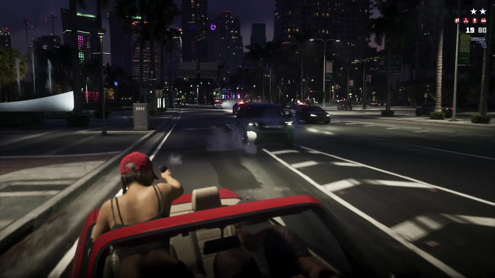
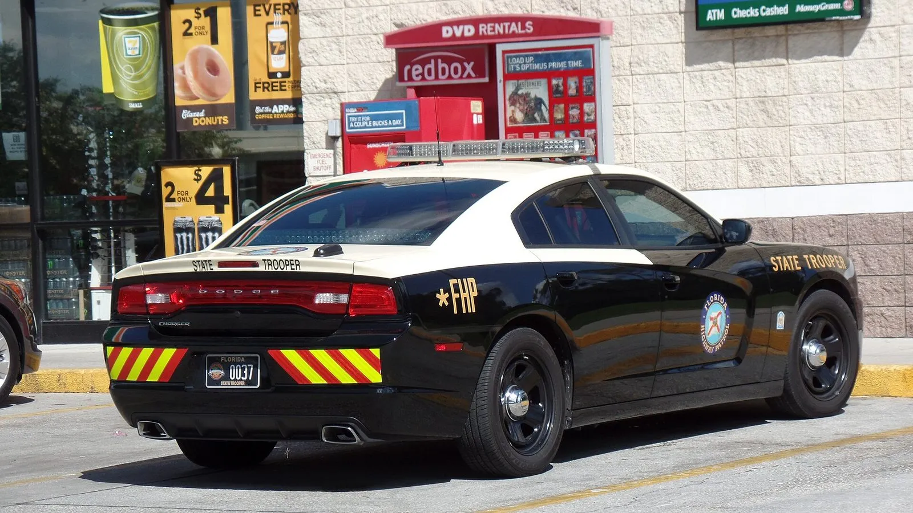
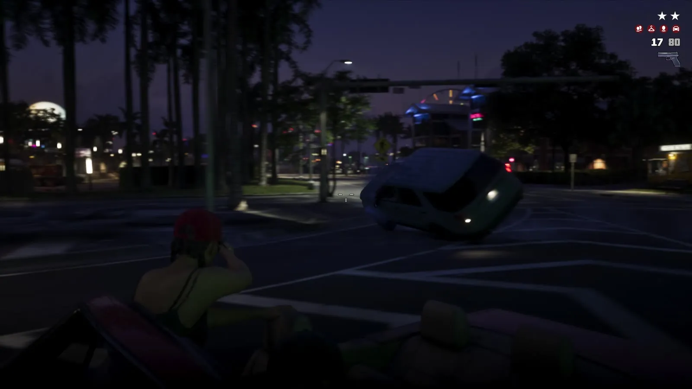

Ночная погоня в GTA 6 и закон Флориды о бегстве от полиции
Опубликовано:
Бегство от полиции — реальное тяжкое преступление во Флориде, и его тяжесть растёт вместе с опасностью езды. Но стрельба из кабриолета и взрывы на дороге — игровое преувеличение, а не копия реальных погонь.


- В «Расширенном показе» GTA 6 красный кабриолет несётся ночью по центру Вайс-Сити, в углу экрана — две звезды розыска.
- Девушка в красной кепке встаёт и стреляет на ходу, впереди переворачивается машина.
- Во Флориде отказ остановиться по требованию полиции — уже тяжкое преступление (felony) 3-й степени.
- Бегство на высокой скорости или с явным пренебрежением безопасностью людей — felony 2-й степени, а если кто-то серьёзно пострадал или погиб — 1-й.
- Суд лишает водителя прав минимум на 1 год, максимум на 5 лет.
Что в игре
Около 18:42 «Расширенного показа» красный кабриолет мчится ночью по широкой улице между небоскрёбами Вайс-Сити. В правом верхнем углу экрана — две звезды розыска: в серии GTA так игра показывает, что героев ищет полиция.
Девушка в красной кепке поднимается на сиденье и стреляет на ходу. Через секунду машина впереди переворачивается, у дороги — взрыв. Кто за рулём и кто именно их преследует, по кадрам не видно.

Что в реальности
Во Флориде бегству от полиции посвящена статья 316.1935 правил дорожного движения штата. Наказание растёт ступенями:
- водитель знает, что полицейский приказал остановиться, и не останавливается — felony 3-й степени;
- уходит от патрульной машины с включёнными сиреной и мигалками — тоже felony 3-й степени;
- при этом едет на высокой скорости или так, что видно явное пренебрежение безопасностью людей и имущества, — felony 2-й степени;
- если из-за такой езды кто-то получил тяжёлые травмы или погиб — felony 1-й степени.
Кроме того, суд обязан лишить водителя прав на срок от 1 года до 5 лет.
В игре звёзды розыска появляются за стрельбу и погоню, а во Флориде тяжким преступлением становится уже сам отказ остановиться по требованию полицейского — даже без превышения скорости.
Совпадает и отличается
| Флорида | GTA 6 | |
|---|---|---|
| Бегство от полиции | Felony 3-й степени, на высокой скорости — 2-й | 🟡 Две звезды розыска на экране |
| Стрельба из машины, перевёрнутые машины, взрывы | — | 🔵 Игровое преувеличение |
| Последствия для водителя | Лишение прав на 1–5 лет | 🔵 В игре не показано |
Источники: Rockstar Games — «Grand Theft Auto VI: An Extended Look» (18:42–18:45); The Florida Legislature — Florida Statutes § 316.1935 «Fleeing or attempting to elude a law enforcement officer» (ред. 2025); Wikimedia Commons — фото Rich Menga (CC BY 2.0).
Реальные фото: Фото: Rich Menga, CC BY 2.0 · Wikimedia Commons. Кадры игры: Rockstar Games.
Каждый день — одно сравнение: кадр игры рядом с реальным фото. Подписывайтесь:
YouTubeInstagramTikTok
 vs
vs